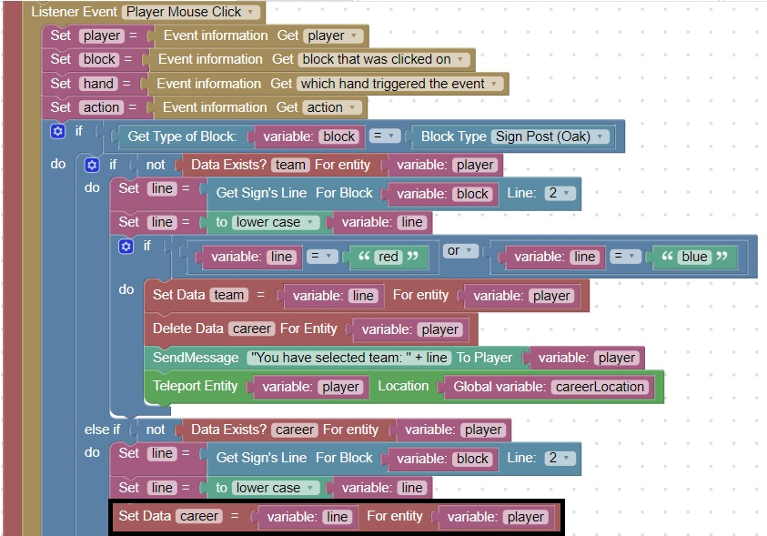
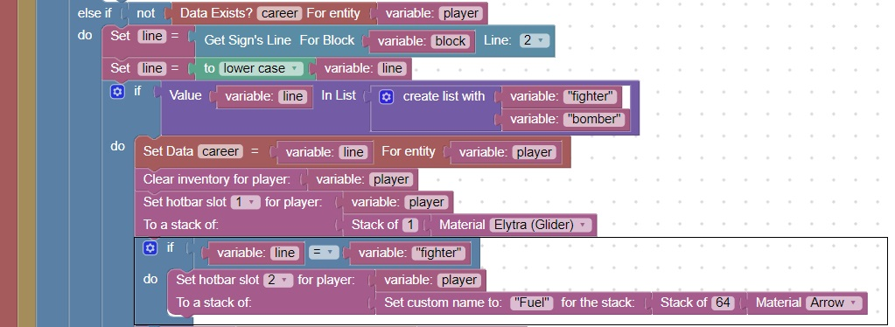
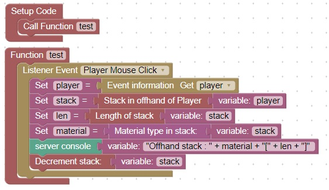

Fighter Fuel
Since the fighter class needs arrows in their off-hand to shoot into the air
Let's rename the arrows as fuel and give the player arrows with a custom name of fuel
First let's determine where in the code we need to make the change
There is a place in the code where the player is choosing a career, at this point when they choose fighter they should get the fuel
Take a look at the player mouse click event this is where the code change needs to be made

After the code that gets the career, if the career is fighter, we want to give them a custom named stack:
You can use this code as reference:

Can you see how to give the bomber snowballs named "Bombs"?
To decrement the stack, and get the length and type of the off-hand stack consider this code:

Can you visualize how to add a fuel for fighters which is decremented each time the press left mouse to accelerate?